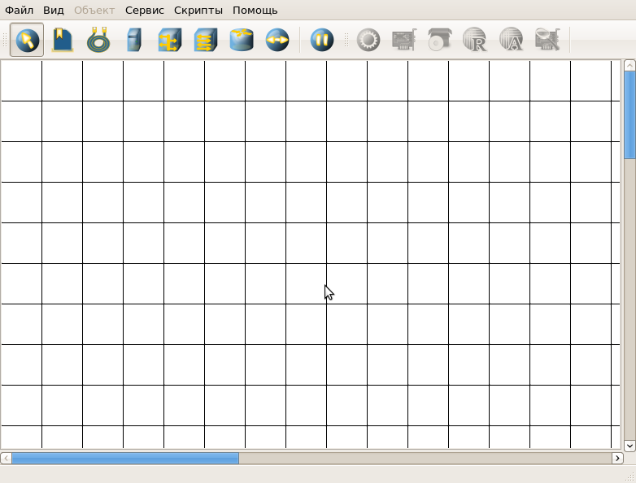

| Руководство NetEmul | ||
|---|---|---|
| Пред. | След. | |
Все элементы размещаются на рабочей области (далее сцена). Устройства размещены на панели устройств.

Так выглядит главное окно программы. На всей свободной области сцены, размеченной сеткой можно ставить устройства, при этом они не должны пересекаться. На панели устройств размещены все необходимые для построения сети инструменты, а так же кнопка отправки сообщений и start/stop. Для Вашего удобства, при наведении на инструмент, в строке состояния появляется подсказака. На соседней панели (панель параметров) расположены свойства объектов. Для выделенного объекта появляются только те свойства, которые характерны для него.
Панели можно переместить в удобное для Вас место или вовсе убрать.
Это был очень краткий обзор,а для того, чтобы лучше разобраться с интерфейсом программы стоит посмотреть пункты меню и все настройки.
Более конкретное описание определенных действий можно найти далее, в соответствующих разделах.
| Пред. | Начало | След. |
| Ip-адресация | На уровень выше | Построение сети |